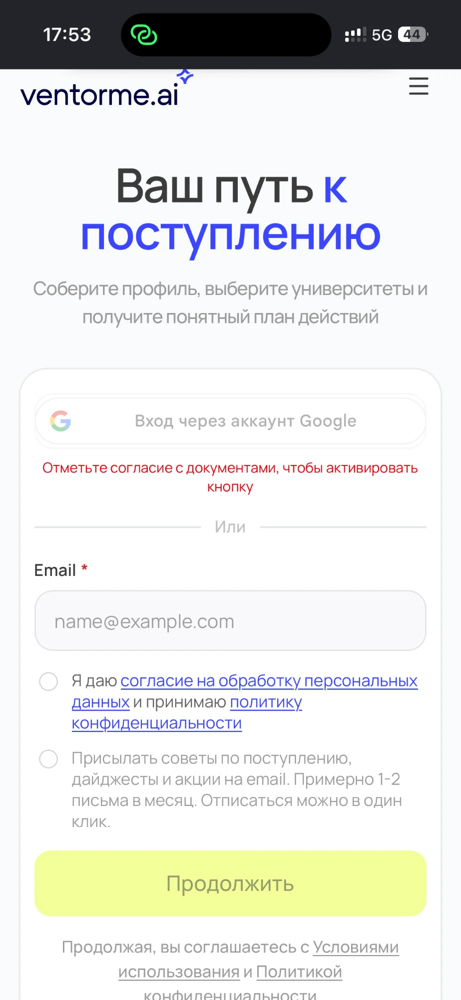
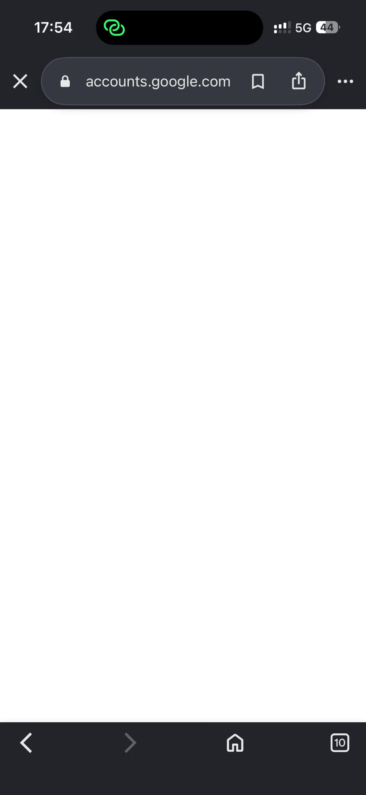
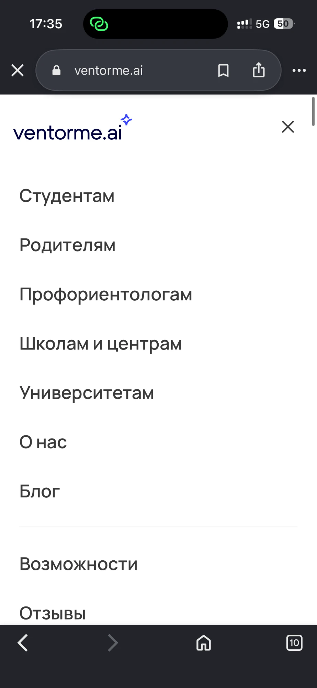
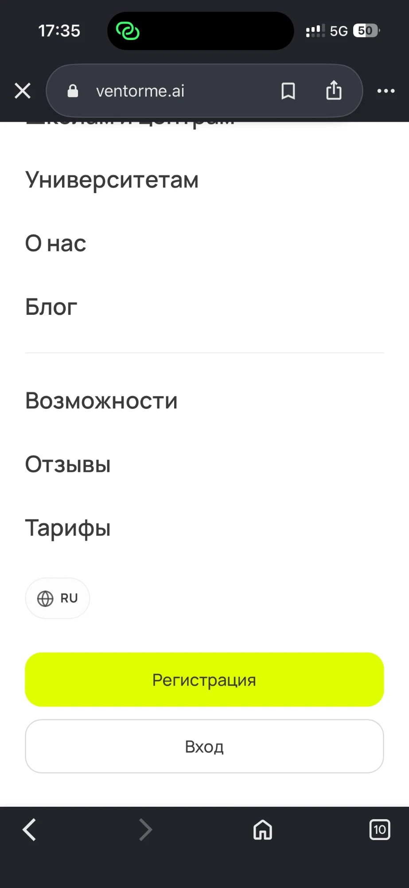
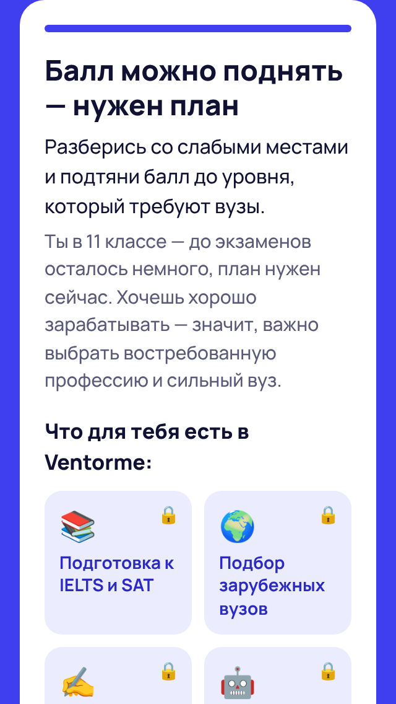

Разбор данных Т1–Т11, ручная проверка сайта, кастдев и новый лендинг
1Холодный трафик из Instagram не получает ответа «зачем мне это»
2На телефоне регистрация спрятана за меню из 10 пунктов
3Квиз — главный источник регистраций — закрыт cookie-баннером
Все источники вместе Т2
Один и тот же источник — «Прямой заход» Т4
98% трафика из Instagram — телефоны (658 из 670) Т4. Instagram конвертирует плохо — и тянет вниз всю «телефонную» цифру.
При одинаковом источнике разницы нет: 23,3% против 23,4%.
Без Instagram и Facebook: телефон 27,4% [22,8–32,4], компьютер 33,8% [27,9–40,2] — интервалы пересекаются.
Вывод: важно не устройство, а то, откуда пришёл человек.
| Кажется | На самом деле |
|---|---|
| «Кто дольше на сайте, тот регистрируется» Т7 | Обратная связь: регистрация сама удлиняет визит |
| «Квиз поднимает конверсию с 5,8% до 66,7%» Т8 | Самоотбор: квиз начинают заинтересованные. Сильный аргумент другой — 95% начавших доходят до конца |
| «Неделя 24–30 августа провалилась (6,8%)» Т5 | Сменился состав трафика: визитов в 1,5–2 раза больше обычного, 88,9% с телефона. Без этой недели — 24,3%. гипотеза |
| «На казахском конверсия 30,8%, на планшете 80%» Т10, Т2 | Группы из 13 и 5 человек — шум. Интервал для казахского: 12,7–57,6% |
| «Язык сайта влияет» Т10 | Русский 18,4% [16,1–20,9] vs английский 21,3% [16,9–26,7] — интервалы пересекаются |
| «Нужно, чтобы долистывали до конца» Т6 | Долиставшие на телефоне регистрируются на 12,5% — не лучше среднего |
И артефакт измерения: «устройство» = браузер. Кто открыл ссылку в Instagram, а зарегистрировался позже в Safari, посчитан как ушедший — конверсия Instagram немного занижена.
Открыли ventorme.ai из Instagram, TikTok, Telegram, WhatsApp на iPhone и Samsung и прошли регистрацию через Google.
не подтвердилась Регистрация проходит. Причина низкой конверсии Instagram — не техническая.


Конверсия в регистрацию по источникам Т3
Лендинг должен за 3 секунды ответить: «что я получу».
Конверсия тех, кто не прокручивал главную Т6
Нажали «Регистрация», «Войти» или «Вход» в шапке Т9
Пункты меню «Для кого», «Переключатель языка», «Родителям» — 0 нажатий с телефона Т9. Меню на телефоне почти никто не открывает.


Ещё 19,4% тыкают в картинки и пустые места, которые не нажимаются Т9. «Начать тест» нажали 275, а квиз начали 184 — часть кнопок ведёт не туда Т8, Т9.
Кастдев со сверстником, который впервые открыл ventorme.ai
| Наблюдение | Источник |
|---|---|
| Регистрация на телефоне — внизу меню из 10 пунктов | наша проверка Т9 |
| Cookie-баннер закрывает квиз на первом экране | наша проверка Т9 |
| Кнопка Google заблокирована до галочки согласия | наша проверка Т1 |
| Обещание квиза не выполняется — после регистрации результата нет | кастдев |
| В тесте нет варианта «другое / все перечисленное» | кастдев |
| Онбординг длинный: школы нет в списке, код может не прийти | кастдев |
| О поступлении узнают из Telegram-каналов | кастдев |
| Причина | Что на лендинге |
|---|---|
| 1. Холодный трафик | Заголовок про выгоду: «Узнай свой путь к поступлению за 1 минуту». Почти без текста — решение за 3 секунды |
| 2. Регистрация спрятана | «Регистрация» в шапке без меню + закреплённая кнопка внизу экрана |
| 3. Квиз закрыт баннером | Огромная кнопка «Пройти мини-квиз» — первое, что видно на любом устройстве. Cookie-баннера нет |
| Квиз не отдаёт результат (кастдев) | Результат показываем сразу: совет по ЕНТ / IELTS / SAT + материалы Ventorme под ответы → «Зарегистрироваться бесплатно» |
| Нет нужного варианта (кастдев) | В каждом вопросе есть «не знаю» или «другое» |
| Трения в регистрации | Подсказки: галочка согласия, код в «Спаме», нет школы в списке, пройди онбординг до конца |
Русский и казахский · кнопка ведёт на ventorme.ai/register?…utm_campaign=team-058 · честно: «регистрация бесплатная, часть материалов платная»

5–7 минут в классе: вопрос «кто знает, сколько баллов нужно на грант?», QR-код на лендинг, каждый регистрируется сам со своего телефона, помогаем дойти до конца онбординга
Короткое сообщение со ссылкой; для казахских классов — ссылка с ?lang=kk
Канал, который назвал респондент; просим админов о бесплатном посте
Регистрации с пройденным онбордингом по ссылке team-058 считает Ventorme.
1. Кнопка регистрации в шапке на телефоне, а не внизу меню из 10 пунктов Т6, Т9
2. Cookie-баннер — тонкой полосой внизу, чтобы не закрывал квиз Т8, Т9
3. После регистрации из квиза — сразу показать результат квиза, как обещано кастдев
4. Отдельный первый экран для Instagram-трафика — про выгоду, а не «One platform» Т3, Т4
5. Короче онбординг: школа — с вариантом «нет в списке», галочка согласия — не блокирует кнопку Google кастдев, Т1